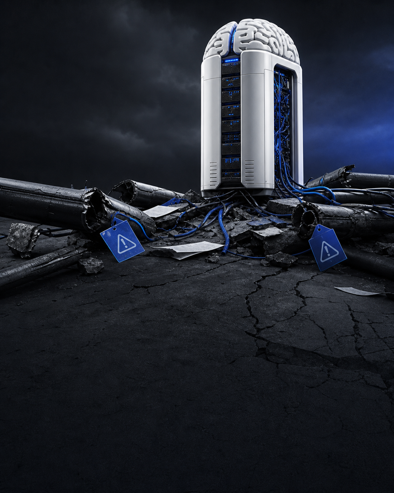

Todo mundo quer IA no marketing.
MAS 85% AINDA NÃO TÊM UM PLANO.
A Supermetrics chama isso de lacuna de prontidão: pressão para adotar IA sem dados, dono e execução para sustentar a promessa.
Notícia de marketing e IA
O alerta por trás da pressão
IA precisa de comandosem dono, dado e fluxo, a adoção vira improviso
NÃO FALTA FERRAMENTA. FALTA DIREÇÃO.
O relatório mostra equipes pressionadas pela liderança, mas sem controle suficiente sobre dados, integrações e ativação.
AI Readiness Gap
A IA ESTÁ SENDO COBRADA ANTES DA CASA ESTAR ARRUMADA.
O relatório mostra times pressionados pela liderança, mas sem controle suficiente sobre estratégia de dados, integrações e fluxos de ativação.
Leitura prática: prontidão para IA é menos sobre comprar tecnologia e mais sobre responsabilidade, governança e execução.
O INSIGHT MORRE NA ÚLTIMA ETAPA.
40% das PMEs e 34% das grandes empresas citam falta de integração entre análise e ativação como maior bloqueio para agir.
Velocidade dos dados
DADO LENTO FAZ IA VIRAR ATRASO COM NOME BONITO.
7%recebem respostas de dados em tempo real
50%esperam de 1 a 3 dias úteis
Quando a pergunta chega tarde, a campanha já mudou. IA precisa de acesso, não de fila.
O problema real
IA NÃO CONSERTA DADO FRAGMENTADO. ELA ACELERA O CAOS.
11%
Dizem ter dados de marketing extremamente precisos e acessíveis.
20%
Das PMEs citam repasses manuais demorados como trava.
27%
Das grandes empresas apontam o mesmo gargalo operacional.
Antes de escalar IA
ARRUME O QUE A IA VAI USAR PARA DECIDIR.
Dados conectados, acessíveis e confiáveis são o começo. Sem isso, a IA só coloca velocidade em um fluxo que já estava quebrado.
Salve · compartilhe · revise seu stack